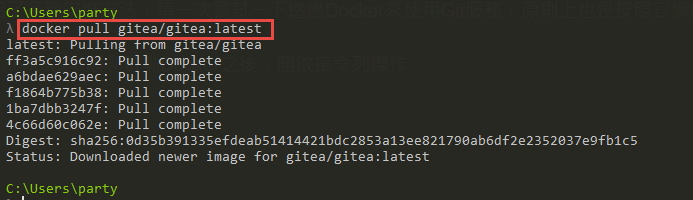
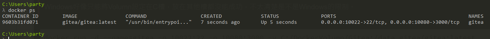
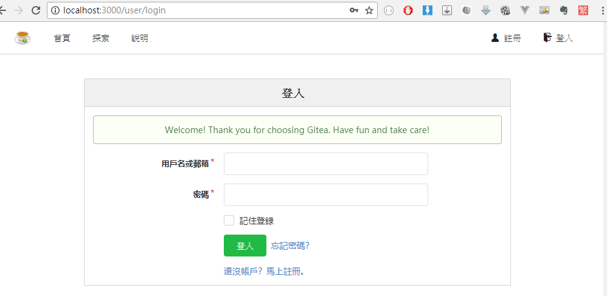
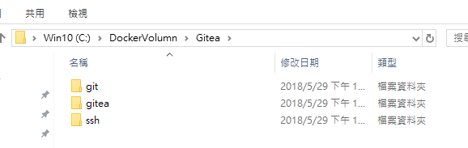
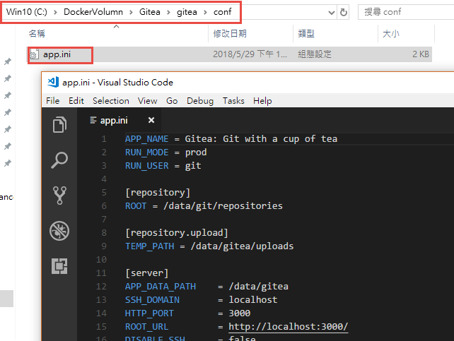

紀錄一下透過Docker練習建立Gitea服務，其實寫這篇文章只是為了記錄windows下怎麼設定volumn而已…
Gitea的網站有提供說明，介紹了各種安裝方法，這一次嘗試一下透過Docker來使用Git服務，原則上也是按照官網的說明Step By Step，所以不會有甚麼難度
首先安裝一下Docker CE for Windows，順利啟動Docker之後，開啟指令列操作
下載Gitea的Docker Image

準備容器資料存放的目錄對應
Git當然會有許多的資料要存，而容器又是一個用完就丟掉的概念，如果容器一被刪除了，資料當然也就不見了；所以為了要讓資料可以保留下來，需要在容器之外給他一個空間來存放這些資料，在Gitea介紹文檔內也有範例指令，只不過要用在Windows上面的話，需要再調整一下。
這邊在設定目錄對應的時候沒能成功，通靈了一下發現這篇文章，順利設定完成，各位可以的話最好順便詳細閱讀一下。
Windows好像只能將Volumn設定在C槽，放在其他槽都沒能成功，不太清楚是不是Windows的限制。
1 | docker run -d --name=gitea -p 10022:22 -p 10080:3000 -v C:/DockerVolumn/Gitea:/data gitea/gitea:latest |
-v的參數後面接的那一串東西，白話文就是：我要掛載一個目錄給這個容器使用，這個目錄C:/DockerVolumn/Gitea就相當於容器裡面的/data目錄唷~
輸入指令之後，沒意外的話系統會詢問你是否要共用這個磁碟讓Docker使用，我想大家應該都是點確定吧
接著透過docker ps確認容器已經走起來了~

Gitea安裝設定
透過瀏覽器訪問localhost:10080就會看到畫面了，選擇註冊，因為是第一次使用，系統會跳到初始設定頁面
這個頁面不外乎就是選擇一些資料庫類型阿，檔案放哪阿，還有這台電腦的domain阿，要用的port之類的設定，因為Gitea我自己也只是初學，沒有辦法介紹的很詳細，只能說請各位自行嘗試囉。這邊可以設定一下admin帳號。
點選立即安裝之後，就會幫你安裝好Gitea，直接就可以順利使用了。有沒有很讚!

剛才提到的volumn，這個時候可以去看一下，以後Gitea的東西就都放在這邊囉，所以要備份，就直接備這個目錄吧

剛才在安裝設定的選項，其實會被存在這裡，所以之後可能可以自己來改 XD (改壞不要說我說的)
